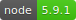
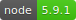

Funktionale Programmierung mit Javascript - FH Rosenheim - AfP SS 2016 -
Michael Haeuslmann & Marinus Noichl
Funktionale Programmierung mit Javascript - FH Rosenheim - AfP SS 2016 -
Michael Haeuslmann & Marinus Noichl
Funktionale Programmierung mit JavaScript
λ
1. April: Michael Häuslmann
15. April: Marinus Noichl
Quellen & Source- und Beispielcode
Github Repository
https://github.com/mihaeu/afp-js
 

Agenda
- Geschichte & Herkunft
- Sprachgrundlagen & Eigenschaften
- Funktionale Konzepte
- Anwendungsbereiche
- Beispiele
Dauer: ~45min (exkl. Fragen)
Geschichte & Herkunft
Wer hat bereits Erfahrungen mit JavaScript gemacht?
Wem macht das Spass?
Wer meint JavaScript ist eine "schöne" Sprache?
Geschichte & Herkunft
[...] you have the power to define your own subset. You can write better programs by relying exclusively on the good parts. - Douglas Crockford, JavaScript - The Good Parts
Geschichte & Herkunft
- 1995 von Netscape entwickelt (in 10 Tagen) für deren Browser
- verschiedene Implementierungen u.a. von Microsoft (JScript)
- Sprachstandard erst später entstanden (ECMAScript)
- aktueller Standard ES6 der von den meisten modernen Browsern zum Teil implementiert wird
- viele Cross-Compiler und Super-Sets (GWT, TypeScript, Dart, Coffeescript, ...)
(es gibt bereits ES2016/ES7, aber hier nicht relevant)

import com.google.gwt.core.client.EntryPoint;
import com.google.gwt.user.client.Window;
public class HelloWorld implements EntryPoint {
public void onModuleLoad() {
Window.alert("Hello, World!");
}
}
Python + Ruby + Haskell = ♥
# Conditions:
number = -42 if opposite
# Functions:
square = (x) -> x * x
# Splats:
race = (winner, runners...) ->
print winner, runners
# Array comprehensions:
cubes = (math.cube num for num in list)
TypeScript
class Greeter {
constructor(public greeting: string) { }
greet() {
return "" + this.greeting + "
";
}
};
var greeter = new Greeter("Hello, world!");
document.body.innerHTML = greeter.greet();
Geschichte & Herkunft
- Keine (ernsthaften) Alternativen
- früher außschließlich im Frontend, jetzt überall (Backend, Desktop- und Mobileapps)
- unere Meinung: sehr viel Hype, aber auch echte Chancen
Agenda
-
Geschichte & Herkunft
- kommt aus dem Web
- viele Altlasten
- sehr aktive und beliebt
- Sprachgrundlagen & Eigenschaften
- Funktionale Konzepte
- Anwendungsbereiche
- Beispiele
Sprachgrundlagen & Eigenschaften
// @sample: language-basics
Sprachgrundlagen & Eigenschaften
Datenstrukturen
Intern sind das alles Objekte (auch Funktionen selbst)!
// boolean
true
false
// number
1
3.1415
// string
'Hello'
// regex
/java[sS]cript/
Sprachgrundlagen & Eigenschaften
Datenstrukturen
// assoziatives Array (functioncal scope)
var arr = [1, 2, 3];
// Objekte ähnlich wie JSON (global scope)
obj = {
bezeichner: 'wert'
}
// seit ES6: Map und Set
// immutable Map (block scope)
const map = new Map([[ 1, 'one' ]]);
// Set (block scope)
let set = new Set([1, 1, 1, 2]); // Set { 1, 2 }
Sprachgrundlagen & Eigenschaften
- Interpretiert
- Dynamische Typisierung
- Coercion
- Lexikalisches Scoping auf Funktionsebene
- Prototyp orientiert
Dynamische Typisierung
⚡ Typ ist zur Compilezeit noch nicht bekannt ⚡
let x; // undefined
x = 1; // number
x = true; // boolean
x = 'true'; // string
Coercion
0 == '' // true
0 == '0' // true
'' == '0' // false
false == 'false' // false
false == '0' // true
" \t\r\n " == 0 // true
⚡ Typumwandlungen z.B. bei == != + ... ⚡
Lexikalisches Scoping auf Funktionsebene
var x = 3;
function func(randomize) {
var x; // geht nur da functional scope
if (randomize) { // bei let error
let x = Math.random();
return x;
}
return x;
}
func(false); // undefined
Prototyp orientiert
- Keine Klassen, Methoden, Konstruktoren, Module (zumindest vor ES6)
- Aber alles über Prototypen möglich
var Animal = (function() {
function Animal(name) {
this.name = name;
}
Animal.prototype.move = function(meters) {
return this.name + " moved " + meters + "m.";
};
return Animal;
})();
Prototyp orientiert
Inheritance :(
function Snake(name, isPoisonous) {
Animal.call(this, name); // super(name)
this.isPoisonous = isPoisonous;
}
Snake.prototype = Object.create(Animal.prototype);
Snake.prototype.constructor = Snake;
Snake.prototype.move = function () {
return this.name + " wiggles " + meters + "m.";
};
Prototyp orientiert
(under the hood)
-
Seit ES6 viel syntaktischer Zucker:
class Animal {
constructor(name) {
this.name = name;
}
move() {
return this.name + " moved " + meters + "m.";
}
}
class Snake extends Animal {
// ...
}
Agenda
- Geschichte & Herkunft
-
Sprachgrundlagen & Eigenschaften
- interpretiert & dynamisch typisiert
- Prototyp-orientiert
- viele Fallen
- knappe Schreibweise
- Funktionale Konzepte
- Anwendungsbereiche
- Beispiele
Funktionale Konzepte
The good ♥
- Funktionen waren schon immer ein first-class-citizen
- seit ES6 Tail Recursion!
- eingebaute Funktionen höherer Ordnung: filter, reduce, map (aber teils untypische Implementierungen)
The bad ⚡
- keine Lazy Evalution (aber es gibt Libraries)
- viele Seiteneffekte
- kein Currying
Höhere Funktionen in JavaScript: filter()
Welcher Ansatz ist einfacher zu verstehen und hat weniger mögliche Fehlerquellen?
// imperative
// @sample: filter-imperative
// functional
// @sample: filter-functional
Höhere Funktionen in JavaScript: map()
Was mache ich, wenn ich eine ähnliche Funktion wie z.B. die Quadratwurzel brauche?
// imperative
// @sample: map-imperative
// functional
// @sample: map-functional
Höhere Funktionen in JavaScript: reduce()
// imperative
// @sample: reduce-imperative
// functional
// @sample: reduce-functional
Agenda
- Geschichte & Herkunft
- Sprachgrundlagen & Eigenschaften
-
Funktionale Konzepte
- funktionale Programmierung möglich
- viel Handarbeit oder Erweiterungen nötig
- Performanz an manchen Stellen problematisch
- Anwendungsbereiche
- Beispiele
Anwendungsbereiche
- Web, Mobile, Chromeapps: Templating, APIs, DOM, DB Operationen, ...
- JavaScript läuft auf einem einzigen Thread *
- daher keine Möglichkeit zur Parallelisierung
- aber JavaScript Umfeld (Web) und Node Architektur Event-basiert
* im Browser wird Code manchmal auf anderen Threads ausgeführt
Anwendungsbereiche
Kurzer Ausflug: Node Architektur

Anwendungsbereiche
Kurzer Ausflug: Node Architektur
The cost of IO
| L1-Cache | 3 cycles |
| L2-Cache | 14 cycles |
| RAM | 250 cycles |
| Disk | 41 000 000 cycles |
| Network | 240 000 000 cycles |
Anwendungsbereiche:
Event Driven Programming
Idee: Langsame externe Events asynchron verarbeiten und weitermachen bis das Ergebnis kommt
Ergebnis: Je nach Anwendungsbereich sehr hoher Durchsatz
Anwendungsbereiche:
Event Driven Programming
fs.readFile('config.js',
// some time passes...
function(error, buffer) {
// the result now pops into existence
http.get(options, function(resp){
resp.on('data', function(chunk){
//do something with chunk
});
}).on("error", function(e){
console.log("Got error: " + e.message);
});
}
);
Anwendungsbereiche:
Event Driven Programming
Lösung: Futures/Promises (Continuation Monad)
fs.promisifiedReadFile('config.js')
.then(fetchSomethingFromWeb)
.then(processThatData)
.then(saveItToTheDatabase)
.catch(function(error) { console.log(error); });
Anwendungsbereiche:
Event Driven Programming mit Promises
Viele Implementierungen auch mit, fold, forEach, map etc.
fs.promisifiedReadDir('/home/user/workspace')
.map(fs.promisifiedReadFile)
.reduce((total, content) => total += content.length, 0)
.then(result => console.log(result))
.catch(error => console.log(error));
Agenda
- Geschichte & Herkunft
- Sprachgrundlagen & Eigenschaften
- Funktionale Konzepte
-
Anwendungsbereiche
- Single-Thread Architektur problematisch für komplexe Berechnungen
- Event-basierte Programmierung gut mit funktionaler Programmierung kombinierbar
- Beispiele
Beispiele: Live Coding
- Currying
- Funktionen höherer Ordnung
Zusammenfassung
Quellen
Bücher
- JavaScript - The Good Parts von Douglas Crockford
- Exploring ES6 von Dr. Axel Rauschmayer
- Das Curry-Buch - Funktional programmieren lernen mit JavaScript von Stefanie Schirmer, Hannes Mehnert, Jens Ohlig